№8 Комбинаторика
Это задание довольно легко прогается с некоторыми нюансами по отдельным номерам. В 2026 году изменений в задаче не было, осталась как есть.
Разборы
Пример 1)
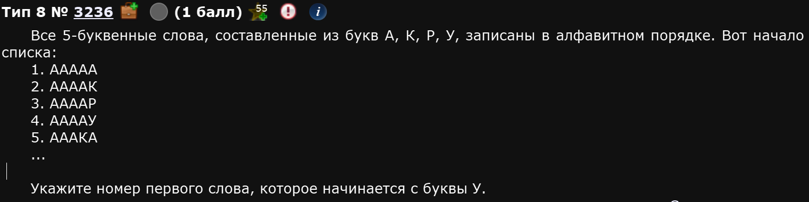
На самом деле, 8ое задание прогой решается полным перебором в любом из возможных вариантов. Возьмем для примера эту задачу.
Идея в том, чтобы тупо написать все возможные слова и вручную найти нужное т.е. то, которое начинается с буквы у. Для этого придется задать алфавит, счетчик и число букв в словах.
Из хорошего
В целом, этот алгоритм практически универсален, с поправкой на сложные номера. Идея та же, условий будет больше.
ВАЖНО
Буквы пишем в том порядке, в котором они даны НЕ в тексте задания, а в самом списке, здесь они совпадают, но иногда - нет
Программка выдаст список из 1024 слов. 769 из них - это первое слово, которое начинается с буквы У.
Ответ: 769
Пример 2)
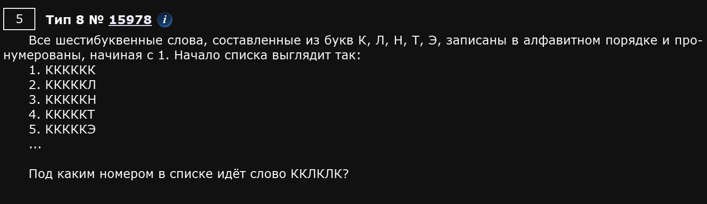
Собственно, велосипед не изобретаем, алфавит меняем, циклы расширяем. Единственное, что кол-во слов больше, около 15к, вручную искать будет долго. Поэтому напишем дополнительное условие прям в цикле:
По поводу циклов
В №8 вместо того, чтобы писать какие буквы должны быть в слове, а какие нет под if, можно исключить некоторые буквы из alp. Эти действия похожи, но не совсем эквивалентны. Когда вас в задании просят номер слова, то лучше условия писать под if, а не исключать буквы из alp.
Ответ: 131.
Пример 3)
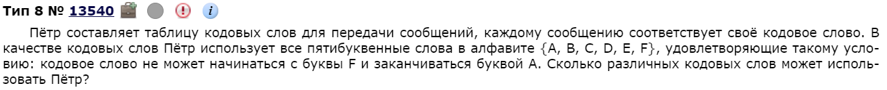
По той же схеме:
Пример 4)
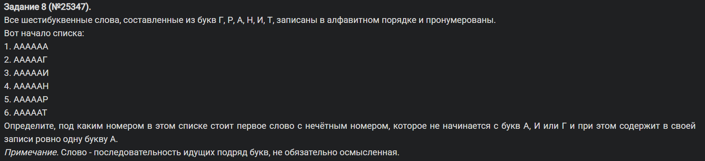
Как и говорил, идея та же, условий чуть побольше. Следующие несколько номеров, думаю, можно с минимальными комментариями.
Пример 5)
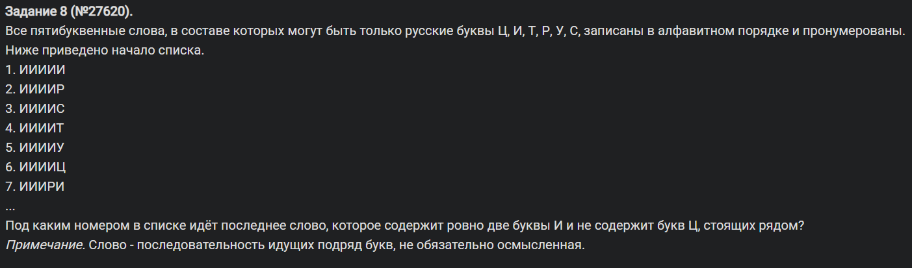
Тут нас просят найти номер последнего слова с таким-то условиями. Можно просто поставить еще одну переменную и, поскольку циклы идут от меньшего к большему, то последнее слово само запишется в эту переменную именно в нужный момент.
Пример 6)
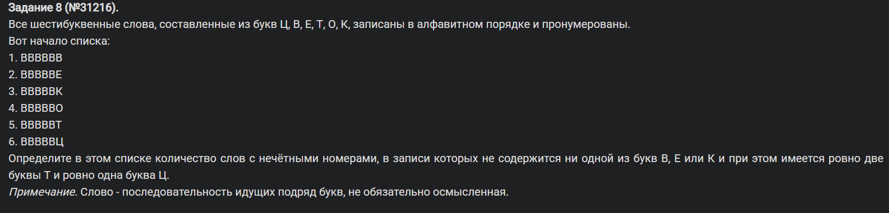
Пример 7)
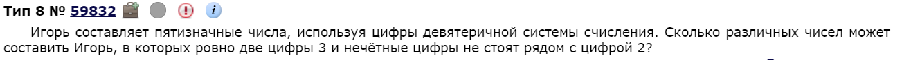
Аналогично предыдущим, меняются только условия. В случае этого задания нужно 3 условия:
- Чтобы первое число не было равно 0, иначе число не будет восприниматься как пятизначное и мы получим неправильный ответ.
- Чтобы в числе было ровно 2 тройки.
- Чтобы никоим образом мы не встретили внутри числа одну из следующих комбинаций:
[12 21 23 32 52 25 72 27].
Разберемся с третьим условием подробнее.
if all(x not in number for x in '12 21 23 32 52 25 72 27'.split()):Этот кусок кода проверяет, что в числе number нет запрещенных комбинаций "12", "21", "23", "32", "52", "25", "72", "27".
Это работает так: '12 21 23 32 52 25 72 27'.split() превращает строку в список: ['12', '21', '23', '32', '52', '25', '72', '27']. Затем, в for x in ['12', '21', '23', '32', '52', '25', '72', '27'] мы перебираем каждую запрещенную последовательность (x). x not in number: тут проверяем, содержится ли x в number. Если number = "12345", "12" есть в number, значит x not in number → ложь. Если number = "34567", "12" нет, значит x not in number → истина.
all([...]) проверяет, что все элементы списка дают True, т.е. ни одной запрещенной комбинации нет в числе.
Пример работы
Пример 1) (Запрещенная комбинация есть)
number = "12345"'12' in "12345"→True'21' in "12345"→False'23' in "12345"→True- Остальные комбинации не проверяются, так как
all([...])уже не выполняется. - Условие не проходит, число не учитывается.
Пример 2) (Все запрещенные комбинации отсутствуют)
number = "30456"'12' not in "30456"→True'21' not in "30456"→True'23' not in "30456"→True'32' not in "30456"→True'52' not in "30456"→True'25' not in "30456"→True'72' not in "30456"→True'27' not in "30456"→True- Все элементы вернули
True, значитall([...]) == True, и число засчитывается.
Таким образом, каждый из нас - булочка с корицей,,,
Ответ: 3352.
Пример 8)
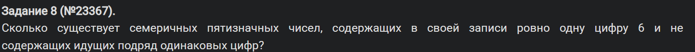
Тут мы можем выделить один хороший прием, ответ на условие про “не содержит идущих подряд одинаковых цифр”. Прием называется “пробегись по всей длине строки и проверь, что текущее не равно следующему”. Реализуется так:
Вот как раз all(num[i] != num[i+1] for i in range(4)) - буквально означает “выполняется для всех случаев (all), что текущая цифра (num[i]) не равна (!=) следующей цифре (num[i+1]) и так для каждой позиции из всего числа (for i in range(4))”. Работаю переводчиком, номер знаете.
Пример 9)
Также, в №8 есть прототипы посложнее. Для них наш шаблон тоже подходит. Рассмотрим одно из таких:
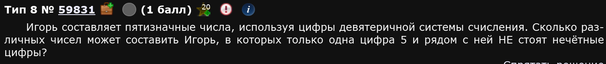
Идея кода такая же, как и в предыдущих случаях - полный перебор. Меняются только условия. Тут нужно рассмотреть несколько важных случаев и составить дерево условий:
- Если 5 находится вначале числа (на первой позиции), то нужно проверить является ли число впереди него одним из нечетных т.е.
1, 3, 7. Если да - не засчитываем в ответ. - Если 5 находится на последней позиции числа, то нужно проверить является ли число на предпоследней позиции одним из нечетных т.е.
1, 3, 7. Если да - также не засчитываем в ответ. - Если 5 находится где-то в середине числа, то нужно проверить соседние числа, с индексом (позицией) на 1 больше и на 1 меньше, чем у 5. Если кто-то из них нечетный, то не засчитываем эту итерацию цикла в ответ.
- В остальных случаях - нас все устраивает, прибавляем счетчик
count += 1.
По итогу, получаем такой код:
Ответ: 8880
Пример 10)
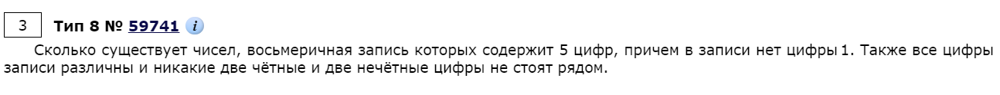
Довольно хитрый прием в восьмом номере - это делать так, чтобы цифры были различны и / или никакие две четные / нечетные не стояли рядом. В целом, решать можно по-разному, я покажу два способа.
Способ 1) Два цикла и тупые условия
Идея такая: вместо того, чтобы писать один большой цикл, напишем 2 разных цикла, а результат сложим. Такая практика нужна, прежде всего для удобного выполнения обоих условий одновременно: “две четные и две нечетные не стоят рядом” у нас правда потому, что мы буквально чередуем чет / нечет в циклах, а различность цифр выполняется потому, что мы буквально чередуем чет / нечет в циклах.
Совет
Не рекомендую конкретно в этом задании в алфавите циклов самостоятельно исключать числа - программа все решит за вас.
Однако, дополнительные условие под if написать все же придется, поскольку l1 у нас может совпадать с l3 и l5, также как l2 может совпадать с l4. В целом, дело нехитрое.
Способ 2) Через itertools
Собственно, тут тоже полный перебор, но написано хитрее. Давайте сначала код посмотрим, а потом расскажу детали.
По шагам:
for w in product('0234567', repeat=5):- перебирает все комбинации из цифр0234567длины 5if w[0] != '0' and len(set(w)) == 5:- выполняет условия, что число не начинается с0и что все числа различныif all(int(w[i]) % 2 != int(w[i + 1]) % 2 for i in range(4)):и далееc+=1- цитата: “если для всех соседних пар цифр остатки от деления на 2 разные, значит рядом нигде не стоят две чётные или две нечётные цифры и можно делатьc+=1”
Пример 11)
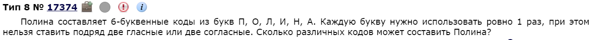
Логика точно та же, что и в предыдущем примере, только вместо чисел у нас строки. Не страшно.
Два цикла
Тут, однако, нам придется руками сказать компьютеру мол вон смотри вот это гласные, а вот это согласные. Условие if len(set(word)) == 6: проверяет различность, как и прежде.
Через itertools
Или даже можно вот так:
Тут можно и без комментариев, полная аналогия с предыдущим.